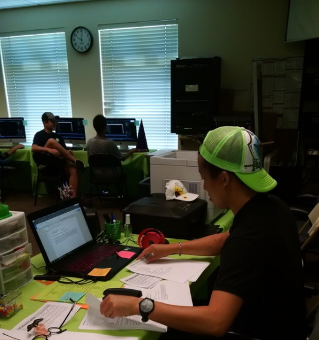
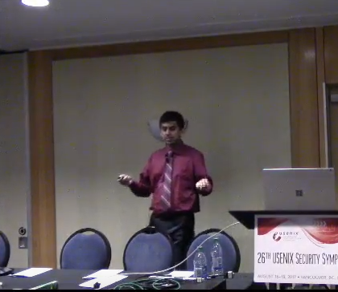

Work Experience
iD Tech - Santa Clara University/ San Jose State University
Instructor
6/19/17-8/18/17

- Taught high school students (ages 13-17) C++, Python, Java, HTML, CSS, JavaScript, Assembly, and BASIC.
- Made weekly lesson plans and modified course to fit students’ needs.
- Mentored each student to create individual projects by the end of each weekly session.
- Coordinated with other instructors to make colaborated teaching styles.
- Taught autstic children HTML.
- Went above and beyond to help directors and team in terms of supervision, course planning, and giving advice to others.
Reference Quotes
Brittney Nicole (Director of San Jose iD Tech Camps) - "Justin was a top performer at camp, he always went above and beyond to ensure the success of his students and brought a positive energy into work every morning!"
Brandon Zwier (Assistant Director of Santa Calra iD Tech Camps) - "Justin Yu worked as a wonderful teacher and mentor, and helped raise staff morale in any way he could. Punctual and hardworking, Justin made a fantastic addition to our team."
Professor Abhradeep Guha Thakurta - University of California, Santa Cruz
Research Mentee
9/29/17-Current

- Analyze research works of professor.
- Code in Python to implement and prove the research is fully complete and give feedback.
- Coordinated with Professor in findings and developing conclusions on theories.
- Weekly meeting with professior to ensure full understanding.
- Working with local differential privacy.